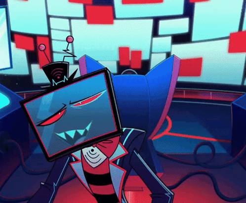

El Demonio de la Televisión
Vox es uno de los Overlords más poderosos e influyentes del Infierno, famoso por su imperio tecnológico VoxTek, su carisma manipulador y su control sobre los medios masivos. Mantiene una intensa rivalidad con Alastor, el Demonio de la Radio. Su enfrentamiento es el choque definitivo entre dos eras: la obsesión por la tecnología moderna y la alta definición contra el encanto macabro de la radio clásica.
